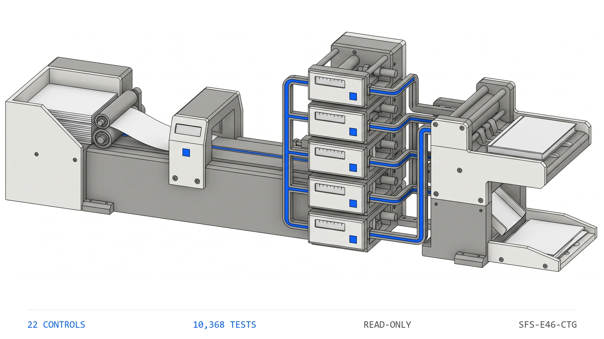

10,3681
Tests
the collected checks that pin this engine's behavior
ENGINE 46
SFS-E46-CTG · CONTINGENCY CONTROLS · REV 2026-07-24 · PRODUCTION
PRODUCTION = runnable end-to-end, CI-backed, full test suite passing. All data fictional and seeded.
Is the contingency still adequate, or does it just still say so?
Every active development project carries two contingency buckets -- construction contingency and project contingency -- and every period the status block for each one is restated by hand: the prior balance, the amount allocated this period, the amount allocated to date, the balance remaining, the projected potential use, and a word that says whether what is left is adequate. Beside the block sits the draw detail the allocated figure is meant to summarise, the project budget that funded the bucket in the first place, and a portfolio rollup that adds every block together for the report that goes upstairs. This engine reads the six artifacts that record emits -- the project register, the budget register, the allocation register, the contingency block, the exposure watchlist and the portfolio rollup -- and runs twenty-two deterministic controls over them. Is the period file complete and the reporting period readable, are the project ids unique, is every status one the block understands and does every project carry a budget, is every draw complete, uniquely identified, on a declared project, in a known bucket, inside the period and positive, is the block complete, do both rollforwards re-derive from the period before them, does the allocated total foot to the draw detail beneath it, does each bucket reconcile to the budget line that funded it, is anything overdrawn, is the projection non-negative, does the adequacy call rebuild from the two amounts that define it, what sits inside the watch band, and do the portfolio rollup, the inadequate count and the exposure watchlist tie back to the blocks. Every figure is compared with exact == in integer cents, every draw is tested against the reporting period the file carries rather than the system clock, and no source artifact is ever written.
Adequate is a comparison, not a label -- and it is stored as a label. The word gets carried forward from a period in which it was true while the projected potential use climbs past the balance behind it, and the block keeps saying adequate because nobody re-struck the comparison that made it so. Underneath that, the rollforward stops rolling: prior balance less allocated this period is the balance remaining, until somebody types over the current figure for a single project, and from then on the block is a mixture of rolled and typed balances that no longer follows from the period before it and survives every period after. And the allocated total stops matching the draws -- it is maintained beside the draw detail rather than footed from it, so a draw never reaches the total, or a single draw is written for more than the balance it draws against and the bucket goes overdrawn in a column nobody re-added. None of the three looks wrong on a printed tab: six numbers and a word, restated every period, for every active project. The engine recomputes both rollforwards from the prior period and the draws booked against them, foots the allocated total to its own line items, walks each draw against what earlier draws left rather than against the opening balance, reconciles every bucket to the budget that funded it, rebuilds the adequacy word from the two amounts underneath it, and foots the portfolio rollup back to the blocks -- all with exact == in integer cents, through the same rollforward kernel that produced the data, with a planted-defect file for every registered control.
Six control families run in registry order over each period file. The first proves the others had something to read and that the reporting period is legible, because a control that passes on absent evidence reports assurance it never performed.
Every active development project carries two contingency buckets, and every period the status block for each is restated by hand: six numbers and a word. The prior balance, the amount allocated this period, the amount allocated to date, the balance remaining, the projected potential use, and whether what is left is adequate. The same three failures recur every period. First, the rollforward stops rolling: prior balance less allocated this period is the balance remaining, until somebody types over the current figure for one project, and from then on the block is a mixture of rolled and typed balances that no longer follows from the period before it -- and it survives every period after. Second, the allocated total stops matching the draws: it is maintained beside the draw detail rather than footed from it, so a draw never reaches the total, or a single draw is written for more than the balance it draws against and the bucket goes overdrawn in a column nobody re-added. Third, the adequacy word goes stale: adequate is a comparison, not a label, and it gets carried forward from a period in which it was true while the projected potential use climbs past the balance behind it. None of these are judgment calls -- whether the projection is a sound estimate is a judgment no engine makes, and this engine does not attempt it. They are equalities and comparisons: a stated balance against a subtraction, a period total against the sum of its line items, a bucket against the budget that funded it, a draw against what earlier draws left, a word against the comparison of two amounts, and a rollup against a re-summation. A deterministic control settles those better than a block restated by hand every period for every active project.
The seeded demo runs every control over every period file7. The CLI generates twenty-four fictional period files -- one clean baseline and one carrying each of the twenty-three planted defects -- then runs all twenty-two controls over each. The clean file returns PASS with no flags; every defect file returns REVIEW or FAIL and names the control it tripped along with the reason that control exists.
A stale adequacy word is caught by re-striking the comparison8. A defect file leaves a bucket's adequacy word reading adequate while raising the projected potential use past the balance remaining, and changes nothing else -- the rollforward still foots and the draw detail still ties. adq_flag_recomputes strikes the comparison itself, finds the balance no longer covers the projection, and reports the word against the two amounts that contradict it.
The overdraw walk measures against what earlier draws left9. One project takes two draws against the same construction bucket. A boundary test sizes the second to fit the opening balance but not what the first one left, so the period total still looks reasonable and only the walk catches it. ctg_no_overdraw reports the second draw by id against the balance actually in front of it, and a draw exactly equal to that balance spends the bucket to zero and is allowed.
| Command | Operation | Output | Exit | Artifacts |
|---|---|---|---|---|
python run.py | regenerate the seeded fictional corpus, run all twenty-two controls, write both reports | per-file verdicts and every actionable finding, then the overall verdict | 2 for the bundled corpus, which carries a planted defect for every control by design | contingency_report.json, contingency_report.md, samples/ |
python -m contingency_engine samples | analyze an existing folder of period files without regenerating it | per-file verdicts and findings | 0 PASS / 1 REVIEW / 2 FAIL / 3 usage | none unless --json or --md is passed |
python -m contingency_engine samples --generate --quiet | regenerate the corpus and print only the overall verdict | a single verdict line | 0 PASS / 1 REVIEW / 2 FAIL / 3 usage | samples/ |
python -m pytest contingency_engine/tests -q | run the full test suite for this engine | 10368 passed | 0 when every test passes | none |
| Measure | Result |
|---|---|
| Engine tests10 | 10,368 tests collected live collection from the engine directory |
| Registered controls11 | 22 controls counted from the registry, not from documentation |
| Planted defects12 | 23 defect files every registered control has at least one file that trips it |
| Control coverage13 | 100 percent of controls with a planted defect no control ships without a file demonstrating it firing |
The engine has no write path and therefore no autonomy to gate. It produces findings; a person decides whether a contingency is topped up, a draw is reversed and a rollup is sent.
Deterministic envelope. seeded fictional inputs, read-only operation, offline default mode.
Demo gate. FAIL on the bundled corpus, by design -- it carries a planted defect for every registered control
| Severity | Verdict | Action |
|---|---|---|
| No findings above PASS | PASS | carry the mechanically clean contingency block into the documented project review and sign-off |
| One or more FLAG, no FAIL | REVIEW | a human resolves each flag; a bucket still covered but thinning into the file's own watch band and an exposure watchlist that disagrees with the blocks both land here |
| One or more FAIL | FAIL | the figure is not carried into the portfolio rollup until the failing control is cleared -- a rollforward that does not re-derive, an allocated total that does not foot to its draws, a bucket that no longer reconciles to its budget, an overdrawn bucket, or an adequacy word the two amounts underneath it contradict |

Distribution: public repository, MIT license.
One conversation: you describe the work that consumes your team's month; we tell you plainly what this engine can take over, what it can't, and what a scoped first phase would cost. Your people keep approval authority.
Book a free consultation